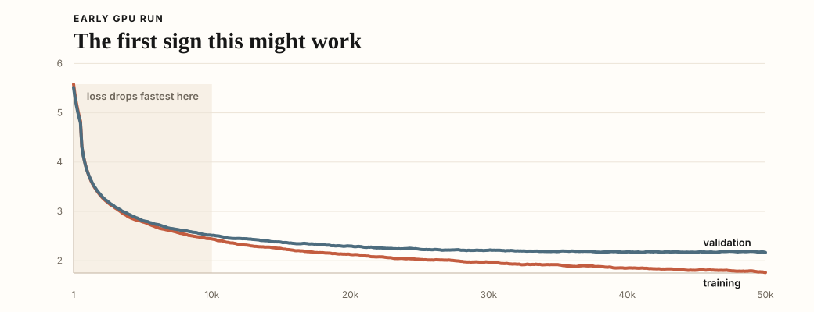
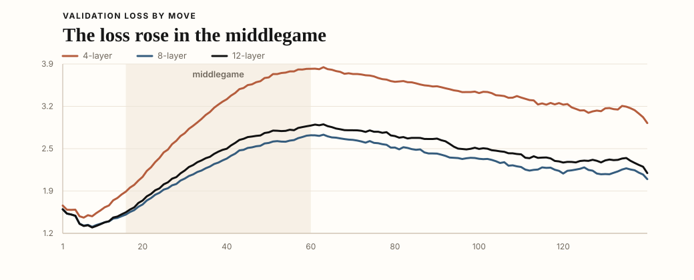

Machine Learning / Chess
nanoDanya
nanoDanya started with one question: can a tiny GPT play chess if every move is a token and the only job is to predict the next one? I had not built a language model before, and chess was small enough to try. The board is fixed, the rules are fixed, and a game can be written down as a list of moves.
The result was a small system where I could change one thing and inspect the games.
Vocabulary
One of the first choices was tokenization. For normal language, nanochat uses BPE. That makes sense because language keeps producing new words, names, spellings, and variations. If you tried to treat every full word as its own token, the vocabulary would get out of hand very quickly.
Chess is much more closed-vocabulary than natural language. A string like Nf3 already means one complete move,
so I tried treating whole moves as tokens. Smaller tokens keep the vocabulary compact, but split a move
across several predictions. Whole-move tokens cost more vocabulary, but they make the model choose moves
directly.
To sanity-check this, I looked at an early rough dataset. The same moves kept showing up, and the distribution was highly repetitive.
![Coverage overview of move vocabulary]()
The exact counts changed as the dataset changed, but the common moves still covered most tokens. The vocabulary was not exploding. Whole-move tokenization was viable because the model could predict a move, not a fragment of move notation.
Data
Once a move was the token, I had to choose the games. The training examples were just games written out as moves.
The model needed reasonably good games, and the public Lichess dataset made that easy. I started with ordinary games where both players were around 2000 Elo or higher. Later I tried puzzle-linked games too. They were still full games, not puzzle prompts, so the training format stayed the same.
Normal games from stronger players, filtered into a plain baseline.
Full games that contain puzzle positions, still written as ordinary moves.
Because the format stayed fixed, I could swap the games and ask the same next-move question, then compare better-picked games against more games.
Model
I started from nanochat and kept its GPT backbone mostly unchanged. I did try a few depths early, but I was not trying to invent a new architecture. The main version settled at 12 layers, 6 attention heads, and a 768-wide embedding. That size stayed close to the nanochat defaults, fit comfortably on a single A100, and was large enough to test the data and tokenization before trying a bunch of model sizes and shapes.
The full run cost about $30 on Modal, roughly what Modal's starter plan includes as free compute each month. I could rerun experiments without thinking too hard about the bill.
Context length had a real training cost here. Attention has to run across the tokens in the window, so making the window larger changes the cost of every batch. It also makes each generated move carry a longer history.
Move-level tokenization made 512 tokens go much further than it would in normal text. One token was one move by one player. Most games were only tens of tokens long, and even long games were in the few-hundred-token range.
So I used a 512-token window. It kept almost every game in view, without making the run pay for a text-sized window that chess was not really using.
Training
I started in a notebook on my own computer, using only a few thousand games so I could see every step. At first I just wanted to know whether plain next-move prediction would produce anything chess-like.
Once it did, I moved the run to Modal for GPU training. The loss dropped, the sampled games held openings together, and the model started reaching recognizable middlegames instead of collapsing immediately.

Next I scaled to roughly 500k games from 2000+ Elo players and larger models. Checkpoints could play each other by then, and the difference showed up quickly. In a 100-game match against the 4-layer model, the 8-layer model went 53 wins, 46 draws, and 1 loss. The 12-layer model went 69 wins, 28 draws, and 3 losses. The larger models also finished games more often, while the smaller one kept drifting into long draws.
To see where it failed, I broke validation loss out by move number. For each held-out game, I stepped through the actual moves, measured loss on the next move, and grouped the losses by ply. Openings were mostly fine. Middlegames were worse.

Openings are repetitive. The model sees the same structures and move sequences over and over again there. By the middlegame, the game has branched out, the positions are sharper, and there are many more ways to be wrong.
I tried changing the data next. One run used full games that contained puzzle positions, hoping those games would include sharper middlegames. I also tried simply using more ordinary high-Elo games. The main comparisons were 500k actual games, 500k puzzle-linked games, 5M actual games, 5M puzzle-linked games, and later 15M actual games. The architecture and next-move objective stayed mostly fixed, so the benchmark was mostly about data source and data scale.
Modal was genuinely excellent here. The part I appreciated most was that it stayed out of the way. The training script was still just Python; the wrapper said, more or less: mount this repo, use this volume, give me an A100. I ran it from my terminal and the logs came back there. For a project built out of changing one thing and running it again, that mattered a lot.
Inference
After training, the inference loop is small. Start with <bos>, feed the tokens so far through
the model, look at the logits at the last position, and choose one next token. If that token is e4,
I push e4 onto a chess board and repeat.
I liked how direct that felt. One token came out, and that token was the move.
For actual games, I usually sample only from legal moves. That keeps games alive, but it means those games test move choice after the legality wrapper, not whether the model rejects illegal moves on its own.
Game endings have the same problem. The dataset has <eos>, so the model can learn to end games. In
practice I still keep guardrails like a maximum move count, because otherwise one bad sample can turn an
experiment into an infinite game. That keeps the run bounded, but the model should learn when a game is over
instead of relying on the harness to rescue it.
I put this behind a Lichess bot to test the live loop. Instead of sampling complete games in a notebook, the model has to answer one live position at a time. You can challenge nanoDanya on Lichess; under the hood it is still waiting for a position and answering with one move.
Benchmarking
At first I was the benchmark. I played against the model myself, watched the games, and noticed the obvious failures: hanging a queen, repeating nonsense, or drifting into a dead ending. At one point the Lichess bot even beat me as Black. That was fun, but it did not tell me whether one checkpoint was better than another.
Because of that wrapper, I separated legality from playing strength. First I checked whether the model's top unfiltered move was legal. Then I let models play each other with both sides kept inside legal chess.
Raw legality
This asks whether the model's first choice is legal before the game runner helps.
| Model | Legal move | By phase |
|---|---|---|
| 500k actual actual games | 95.92% | Open99.63% Mid94.69% End94.21% |
| 500k puzzle-linked puzzle-linked games | 96.02% | Open99.72% Mid94.44% End95.74% |
| 5M actual actual games | 99.46% | Open99.91% Mid99.38% End98.98% |
| 5M puzzle-linked puzzle-linked games | 99.61% | Open99.91% Mid99.59% End99.15% |
| 15M actual actual games | 99.71% | Open99.91% Mid99.63% End99.66% |
I ran this on the same 4096 saved positions for each model. This was the first result that made me stop and stare for a bit. Nothing in this check fixes the move after the fact. The model sees the game so far and answers with one move. The largest run missed 12 positions out of 4096.
For a roughly 100M-parameter next-token model, that felt wild. It had learned how legal chess continues from move strings alone.
I also wanted a reference point from normal language models. I ran the same check against API models: same positions, same game history, no legal move list. The comparison is not perfect, but it is useful. It shows how much of this task is about being a good general model, and how much comes from seeing a lot of chess in exactly this format.
| Model | Legal move | By phase |
|---|---|---|
| Gemini 3.1 Flash Lite Google | 98.95% | Open100.0% Mid98.64% End98.30% |
| Gemini 3.5 Flash Google | 98.17% | Open99.07% Mid97.86% End97.79% |
| Claude Opus 4.7 Anthropic | 93.19% | Open99.17% Mid91.48% End89.27% |
| GPT-5.4 OpenAI | 91.04% | Open98.52% Mid89.75% End82.62% |
| Grok 4.3 xAI | 90.53% | Open97.31% Mid88.84% End85.01% |
| GPT-5.4 Mini OpenAI | 74.44% | Open90.83% Mid69.70% End63.88% |
| Claude Sonnet 4.6 Anthropic | 47.24% | Open96.39% Mid32.77% End16.70% |
Even among API models, the ordering was not obvious: Gemini Flash came out cleaner than Opus.
Model-vs-model games
Legal moves are not the same as good moves. I still wanted to know which model played better once the game stayed inside normal chess, so I let the checkpoints play each other.
| Row model vs opponent | 500k actual | 500k puzzle-linked | 5M actual | 5M puzzle-linked | 15M actual |
|---|---|---|---|---|---|
| 500k actual | - | 62.0% | 9.0% | 13.0% | 7.0% |
| 500k puzzle-linked | 38.0% | - | 7.75% | 6.5% | 4.75% |
| 5M actual | 91.0% | 92.25% | - | 47.25% | 30.25% |
| 5M puzzle-linked | 87.0% | 93.5% | 52.75% | - | 32.5% |
| 15M actual | 93.0% | 95.25% | 69.75% | 67.5% | - |
Read across a row to see how that model scored against each opponent. Each matchup is 200 games; draws count as half a point.
This was the clearest playing-strength result in the benchmark. The 15M model separated from every earlier checkpoint, including the two 5M runs that had looked close before.
Stockfish baselines
| Row model vs opponent | sf500 | sf1000 | sf1500 |
|---|---|---|---|
| 500k actual | 91.5% | 7.75% | 1.75% |
| 500k puzzle-linked | 88.25% | 7.5% | 1.5% |
| 5M actual | 97.5% | 62.5% | 29.25% |
| 5M puzzle-linked | 96.75% | 53.5% | 27.75% |
| 15M actual | 97.0% | 78.25% | 42.5% |
The larger models beat sf1000 but not sf1500; the 500k models only clear sf500.
Head-to-head was good for comparing checkpoints, but I also wanted a chess-player read on the bot. Stockfish ratings are not a clean Elo estimate here, but they give the result a scale that is easier to feel.
The 15M run was past the weak engine but still below sf1500. The games looked similar. It mostly played normal chess, with loose tactics and bad conversions showing up against stronger opponents.
A small chess model
I expected the model to pick up openings. That part almost felt unfair. If it sees enough games starting with e4, e5, and Nf3, of course those grooves start showing up.
The part I did not expect was how far the plain setup got after that. Whole-move tokens, next-move prediction, more good games. No engine in the loop. No search. Just the same objective, with better data behind it.
Early on, I was mostly asking, "will it even make a legal move?" By the end, that was not the main drama. The model would play something that looked like chess, then lose because it missed what was happening on the board or could not turn a good position into a win.
It is not a chess engine, and stronger opponents still show the gaps. But it is a small language model trained on move strings that learned enough chess for the next problems to actually be chess problems.